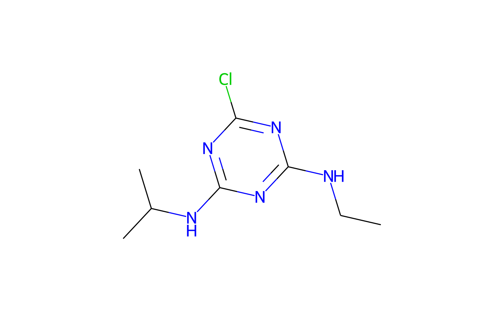

The class is initialised with an identifier which is generally an ISO common name. Additional chemical information is retrieved from the internet if available.
An R6Class generator object
chents::chent -> pai
isoISO common name according to ISO 1750 as retreived from pesticidecompendium.bcpc.org
bcpcList of information retrieved from pesticidecompendium.bcpc.org
Inherited methods
new()pai$new( iso, identifier = iso, smiles = NULL, smiles_source = "user", inchikey = NULL, inchikey_source = "user", bcpc = TRUE, pubchem = TRUE, pubchem_from = "auto", rdkit = TRUE, template = NULL, chyaml = TRUE )
clone()The objects of this class are cloneable with this method.
pai$clone(deep = FALSE)
deepWhether to make a deep clone.
# On Travis, we get a certificate validation error, # likely because the system (xenial) is so old, # therefore don't run this example on Travis if (Sys.getenv("TRAVIS") == "") { atr <- pai$new("atrazine") print(atr) if (!is.null(atr$Picture)) { plot(atr) } }#>#>#> #>#>#> <pai> with ISO common name $iso atrazine #> <chent> #> Identifier $identifier atrazine #> InChI Key $inchikey MXWJVTOOROXGIU-UHFFFAOYSA-N #> SMILES string $smiles: #> PubChem_Canonical #> "CCNC1=NC(=NC(=N1)Cl)NC(C)C" #> Molecular weight $mw: 215.7 #> PubChem synonyms (up to 10): #> [1] "atrazine" "1912-24-9" "Gesaprim" "Oleogesaprim" "Chromozin" #> [6] "Aktikon" "Atrazin" "Argezin" "Atazinax" "Atranex"